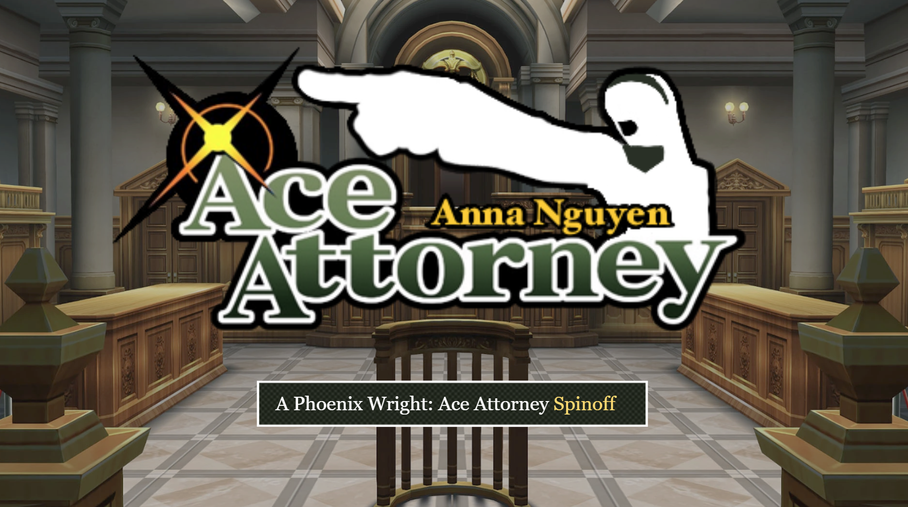

Anna Nguyen: An Ace Attorney Spinoff
Lead Programmer · Team of 4

- Timeline
- Nov - Dec, 2025
- Platform
- Web, PC
Overview
What the game is, who it's for, and the premise in two or three sentences.
My Contributions
- Built the dialogue system that drives testimony and cross-examination.
- Implemented the evidence inventory and "present evidence" mechanic.
- Led code reviews and managed the Git workflow for the team.
Technical Breakdown
Dialogue system
The problem, your approach, and the result. Mention data structures, patterns, or tools you used.
Evidence and court flow
Same format. Recruiters like seeing a problem you hit and how you solved it.